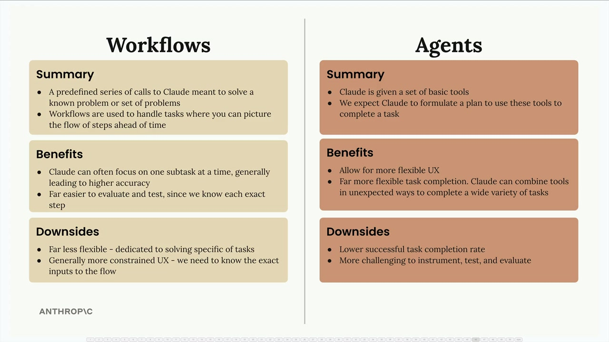

워크플로우 vs 에이전트
AI 기반 애플리케이션을 구축할 때, 두 가지 서로 다른 아키텍처 접근 방식 중에서 선택해야 하는 경우가 많습니다: 워크플로우와 에이전트. 각각은 서로 다른 시나리오에 적합한 고유한 장점과 트레이드오프를 가지고 있습니다.

워크플로우란 무엇인가?
워크플로우는 알려진 문제나 문제 집합을 해결하기 위해 설계된 Claude에 대한 사전 정의된 일련의 호출입니다. 단계의 흐름을 미리 예상할 수 있을 때, 즉 작업을 완료하는 데 필요한 정확한 순서를 알고 있을 때 워크플로우를 사용합니다.
워크플로우는 큰 작업을 훨씬 더 작고 구체적인 하위 작업으로 분해하는 것으로 생각할 수 있습니다. 각 단계는 단일 영역에 집중하여 Claude가 더 정밀하게 작업할 수 있도록 합니다.
에이전트란 무엇인가?
에이전트의 경우, Claude는 기본 도구 세트를 받고 이 도구들을 사용하여 작업을 완료할 계획을 수립하도록 기대됩니다. 워크플로우와 달리, 어떤 작업이 제공될지 정확히 알 수 없으므로 시스템이 더 적응적이어야 합니다.
에이전트는 예상치 못한 방식으로 도구를 결합하여 다양한 과제를 처리하는 방법을 창의적으로 파악할 수 있습니다.
워크플로우의 장점
- Claude가 한 번에 하나의 하위 작업에 집중할 수 있어 일반적으로 더 높은 정확도를 제공
- 각 단계를 정확히 알고 있으므로 평가 및 테스트가 훨씬 쉬움
- 더 예측 가능하고 안정적인 실행
- 구체적이고 명확하게 정의된 문제 해결에 더 적합
에이전트의 장점
- 더 유연한 사용자 경험 제공
- 훨씬 유연한 작업 완료 - Claude가 예상치 못한 방식으로 도구를 결합하여 다양한 작업을 완료할 수 있음
- 개발 중에 예상하지 못했던 새로운 상황을 처리할 수 있음
- 필요할 때 사용자에게 추가 입력을 요청할 수 있음
워크플로우의 단점
- 유연성이 훨씬 낮음 - 특정 유형의 작업 해결에만 전용
- 일반적으로 더 제한적인 사용자 경험 - 플로우에 대한 정확한 입력을 알아야 함
- 더 많은 사전 계획 및 설계 작업 필요
에이전트의 단점
- 워크플로우에 비해 낮은 작업 성공 완료율
- 에이전트가 실행할 단계의 순서를 종종 알 수 없으므로 계측, 테스트 및 평가가 더 어려움
- 예측하기 어려운 동작
각 접근 방식을 사용하는 시기
엔지니어로서의 주요 목표는 문제를 안정적으로 해결하는 것입니다. 사용자들은 멋진 에이전트를 구축했다는 것에 관심이 없을 수도 있습니다 - 그들은 일관되게 작동하는 제품을 원합니다.
일반적인 권장 사항은 가능한 한 워크플로우 구현에 집중하고, 진정으로 필요할 때만 에이전트에 의존하는 것입니다. 워크플로우는 대부분의 프로덕션 애플리케이션에 필요한 신뢰성과 예측 가능성을 제공하는 반면, 에이전트는 정확한 요구 사항을 사전에 결정할 수 없는 시나리오에 대한 유연성을 제공합니다.
명확하게 정의된 프로세스가 있을 때는 워크플로우를, 창의적인 문제 해결이 필요한 예측 불가능하고 다양한 사용자 요청을 처리해야 할 때는 에이전트를 고려하십시오.